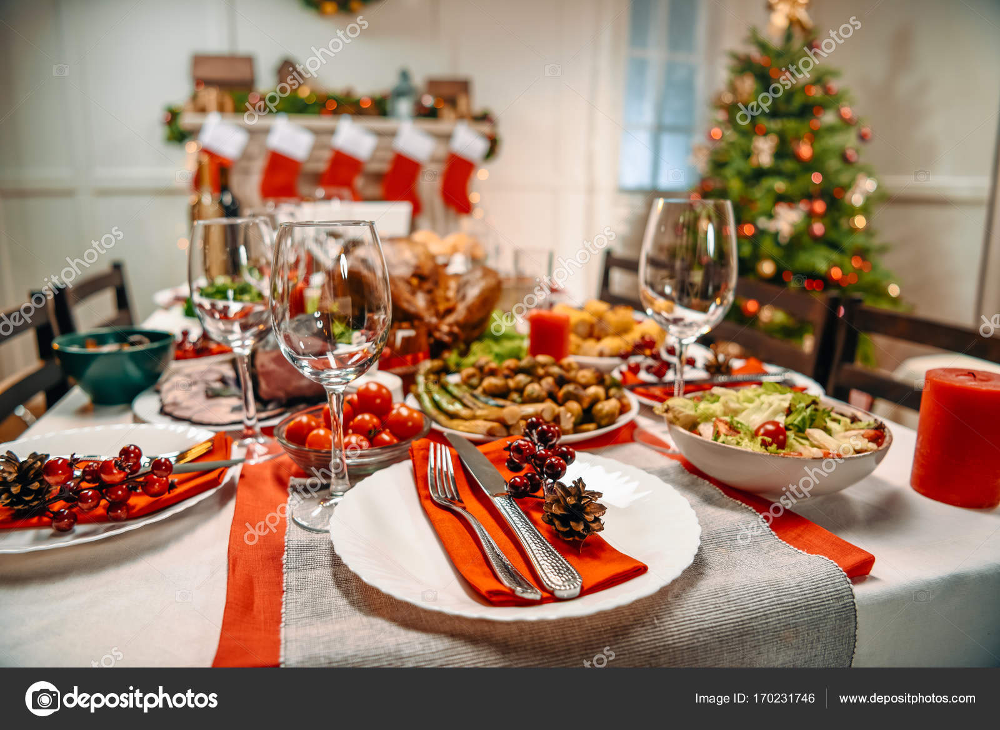
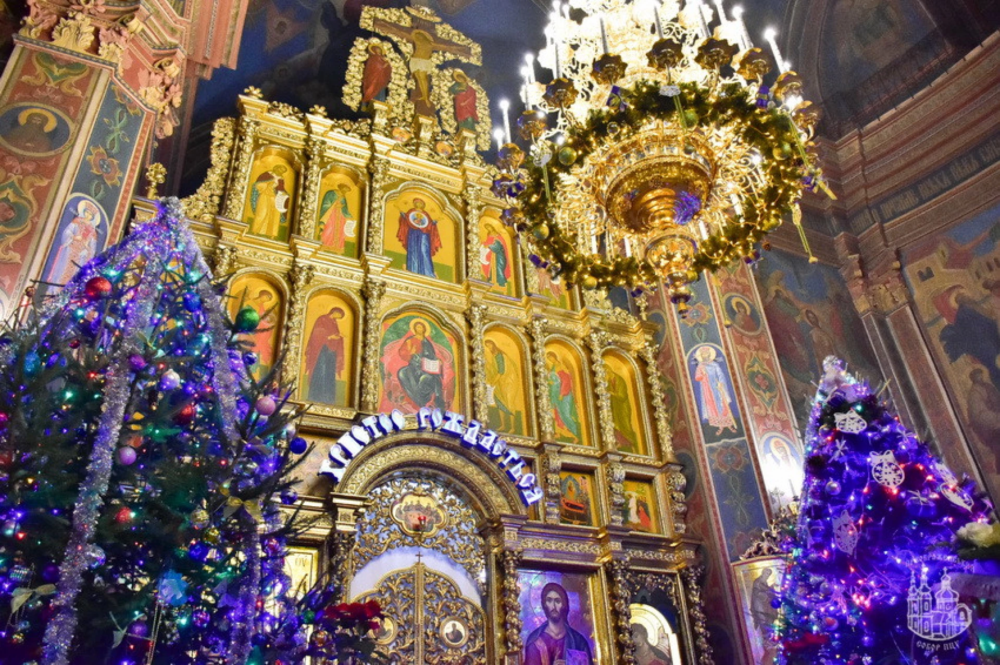
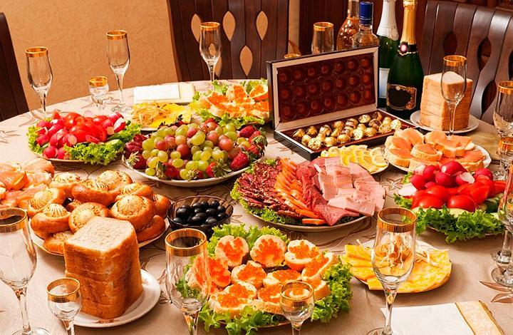

Різдво
Традиції та їжа

Є традиція що потрібно святкувати різдво з сімєю разом національна страва кутя її готують завжди на різдво це національна страва в Україні.

Після вечері прийнято йти до церкви
Новий рік
їжа та традиції

Новий рік святкують теж з родиною або з друзями на новий рік готують теж дуже смачні страви такі як олівє
бутерброди з червоною ікрою та оселедець під шубою.
На новий рік теж можна запускати салюти.